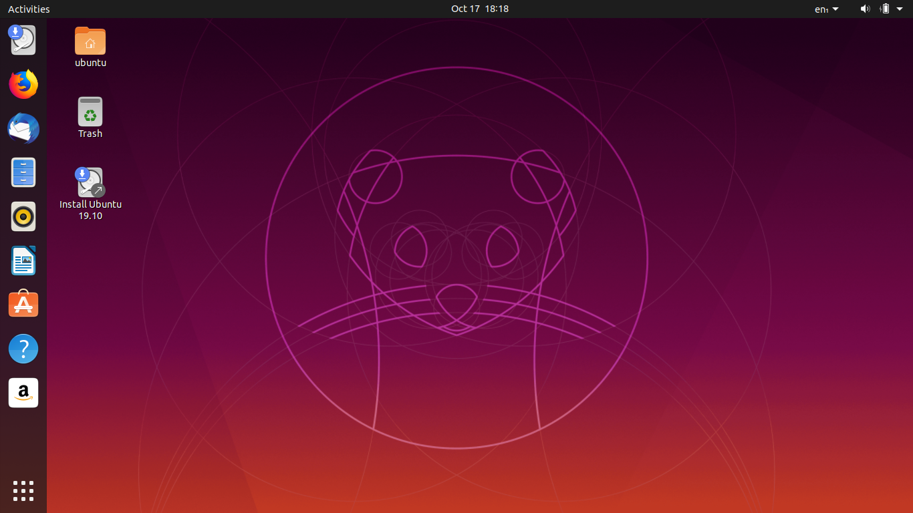

Qu'est-ce que le système d'exploitation Ubuntu?
publié par Dev-Pro
Publié le 4 Janvier 2020 à 8:18 AM

Qu'est-ce que le système d'exploitation Ubuntu?
Le paysage du système d'exploitation est dominé par Windows de Microsoft et Mac OS d'Apple. Même si ces 2 systèmes d'exploitation ont la part du lion sur le marché des systèmes d'exploitation, il existe également quelques autres options. Une telle option est Linux. Les systèmes d'exploitation comme Linux sont créés selon une philosophie entièrement différente de celle de Windows et Mac OS. Linux est un système open source alors que les deux autres ne le sont pas.
Ubuntu est un système d'exploitation basé sur le système d'exploitation Linux open source. Avant d'entrer dans les détails d'Ubuntu, laissez-nous d'abord comprendre ce qu'est exactement un système d'exploitation.
Qu'est-ce qu'un système d'exploitation?
Un système d'exploitation - OS - est un logiciel qui connecte le matériel au côté logiciel de l'ordinateur. Le système d'exploitation est une plate-forme qui permet à l'utilisateur d'exécuter d'autres applications logicielles en utilisant le matériel de la machine. La plupart des applications logicielles de n'importe quelle machine dépendent du système d'exploitation afin de synchroniser les fonctions avec le matériel.
L'OS est responsable de gérer toutes les ressources matérielles de l'ordinateur comme:
- Dispositifs d'entrée / sortie
- Périphériques réseau comme les routeurs / modems
- Périphériques de stockage internes et externes
- Autres périphériques
L'OS est également responsable de l'allocation et de l'utilisation de la mémoire ainsi que des tâches associées à l'exécution des emplacements mémoire et à leur gestion. Ainsi, en termes simples, l'OS fournit une plate-forme non seulement aux utilisateurs, mais aussi au logiciel pour utiliser le logiciel et le matériel de manière intégrée.
Qu'est-ce que l'open source?
Vous avez peut-être remarqué ci-dessus que nous avons déclaré que Linux est un système d'exploitation open source. D'un autre côté, Mac OS et Windows sont des systèmes d'exploitation compilés.
La question qui se pose est ce qu'est un système d'exploitation open source? Un système d'exploitation open source a un code source accessible que les développeurs peuvent utiliser afin de développer davantage le système d'exploitation. Le trait principal du code source est qu'il doit être compréhensible pour l'homme. Les machines ne comprennent pas directement le code source. Il doit être envoyé aux machines à l'aide d'un compilateur.
Afin de comprendre le code source du système d'exploitation Linux, vous devez simplement connaître le langage de programmation dans lequel il est écrit. Vous pouvez télécharger le système d'exploitation et étudier son fonctionnement. Le principal avantage de l'écriture du système d'exploitation en open source est que les développeurs peuvent utiliser le code source pour développer davantage le système d'exploitation. Tout bogue ou vulnérabilité peut également être résolu collectivement.
En revanche, les systèmes d'exploitation Mac OS et Windows sont écrits dans des langues plus faciles à comprendre pour les machines. Il sera très difficile pour un être humain de déchiffrer les données exactes des systèmes d'exploitation compilés. C'est la différence fondamentale entre un système d'exploitation open source et un système d'exploitation compilé. Le système d'exploitation open source est facile à déchiffrer et à développer davantage car le code source est directement disponible.
Qu'est-ce que Ubuntu et comment cela fonctionne-t-il? Ubuntu est un système d'exploitation qui repose sur la fondation du noyau Linux. Il est également connu sous le nom de distribution de Linux. Ubuntu n'est qu'un des systèmes d'exploitation construits à l'aide de la fondation du noyau Linux. Il y en a pas mal d'autres. La plupart des autres systèmes d'exploitation open source construits sur le noyau Linux peuvent être téléchargés et utilisés gratuitement. Il existe des communautés de développeurs dédiées qui peuvent vous aider lorsque vous utilisez ces systèmes d'exploitation.
Le seul problème avec le téléchargement du système d'exploitation open source gratuit est que pour l'utilisateur normal, il peut être trop complexe. C'est là qu'Ubuntu se démarque des autres. Il est distribué par une société nommée Canonical. L'objectif de cette entreprise fondée par Mark Shuttleworth, est de fournir un accès à un OS gratuit et stable aux utilisateurs ainsi qu'aux développeurs. Il ne facture rien pour l'OS. Son modèle économique s'articule autour de l'accompagnement commercial des produits qu'elle a mis sur le marché. Il fournit également diverses solutions logicielles aux entreprises ainsi qu'à d'autres instituts du monde entier pour les aider à accroître leur efficacité et à réduire les coûts.
Pour télécharger Ubuntu, il vous suffit d'obtenir la version officielle du système d'exploitation sur son site Web et de la graver sur un lecteur CD / USB pour l'installer. Vous pouvez même l'utiliser comme système d'exploitation secondaire. Maintenant que vous savez exactement ce qu'est Ubuntu, nous allons entrer dans certains des avantages de ce système d'exploitation.
Avantages d'Ubuntu:
Les avantages d'Ubuntu, de Windows et d'autres systèmes d'exploitation sont nombreux. Nous verrons ci-dessous les avantages d'Ubuntu.
- Ubuntu est gratuit: Le tout premier avantage d'Ubuntu est qu'il est entièrement gratuit. Contrairement à Mac OS ou Windows, vous ne devez payer aucun frais pour l'utiliser.
- Ubuntu peut être facilement personnalisé: même si Windows propose désormais des fonctionnalités de personnalisation, Ubuntu est beaucoup plus personnalisable que n'importe quel autre système d'exploitation populaire. Cela garantit que vous pouvez l'utiliser exactement selon vos besoins. Vous pouvez personnaliser chaque aspect de l'interface utilisateur, ce qui vous permet de rendre votre machine beaucoup plus efficace.
- Ubuntu est plus sécurisé: la plupart des systèmes d'exploitation ont leur propre part de problèmes. Ubuntu, cependant, est beaucoup plus sûr par rapport à certains des autres systèmes d'exploitation comme Windows. Vous n'avez pas besoin de payer de frais pour protéger votre machine lorsqu'elle fonctionne sur ce système d'exploitation. C'est la raison pour laquelle c'est une bonne idée d'opter pour Ubuntu.
- Il peut s'exécuter à partir d'un lecteur flash: vous n'avez pas besoin de l'installer pour l'exécuter. Vous pouvez simplement le charger dans une clé USB et l'exécuter à partir de là. Cela signifie également que vous pourrez emporter votre système d'exploitation partout avec vous.
- Bonne option de développement: si vous programmez ou codez, c'est l'une des meilleures options pour vous. Il vous propose plusieurs options par défaut qui vous permettent de coder immédiatement. Les éditeurs de texte, ainsi que les suites bureautiques, sont directement inclus. Cela signifie que vous n'aurez pas à installer de compilateurs ou de logiciels distincts sur votre système d'exploitation pour commencer à coder.
- Mises à jour fréquentes: le support fourni par Ubuntu est bien meilleur par rapport aux autres systèmes d'exploitation. Tout bogue ou vulnérabilité est corrigé assez rapidement. De plus, avec chaque mise à jour, vous aurez également une multitude de nouvelles fonctionnalités. Cela vous aidera à rendre votre système d'exploitation plus efficace de manière cohérente.
- Ordinateurs de bureau virtuels: Ubuntu vous propose plusieurs ordinateurs de bureau, tout comme l'écran de votre smartphone. Vous pouvez basculer entre les différents écrans afin de travailler sur différents logiciels. Cela garantit que vous êtes en mesure d'augmenter considérablement votre productivité. Ce ne sont que quelques-uns des avantages de ce système d'exploitation par rapport aux autres systèmes d'exploitation. Dans l'ensemble, il est non seulement plus facile à utiliser, mais entièrement personnalisable, ce qui le rend bien meilleur par rapport aux autres systèmes d'exploitation.
Pourquoi devriez-vous passer à Ubuntu?
Les raisons de passer à ce système d'exploitation sont nombreuses. Certains d'entre eux comprennent:
- OS gratuit
- Système d'exploitation sécurisé
- Compatible avec le matériel bas de gamme également
- Facile à utiliser
- Tous les pilotes inclus
- Entièrement personnalisable
Ces raisons vous obligent à considérer Ubuntu comme un système d'exploitation pour votre machine plutôt que de simplement compter sur les autres systèmes d'exploitation compilés.
Donc, si jusqu'à présent, vous n'avez pas utilisé le système d'exploitation Ubuntu, il est temps de le vérifier. Avec son nombre ahurissant de fonctionnalités et ses options de personnalisation complètes, vous pourrez utiliser votre machine exactement selon vos besoins, ce qui augmentera votre efficacité et votre productivité. Il est temps d'explorer Ubuntu plus en détail maintenant que vous en connaissez les bases.
Télécharger Ubuntu
Ubuntu 16.04 LTS 32-bits et 64-bits
Ubuntu 16.04 LTS Serveur 32-bits et 64-bits
Ubuntu 19.04 Desktop et Serveur